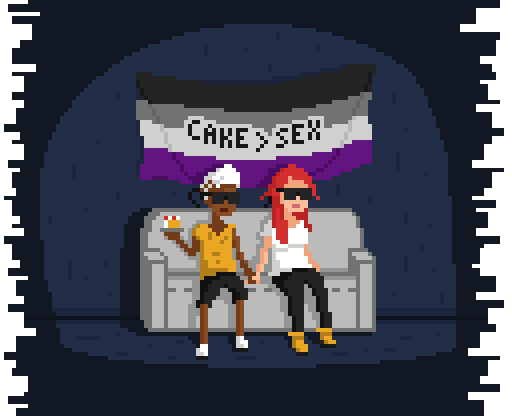
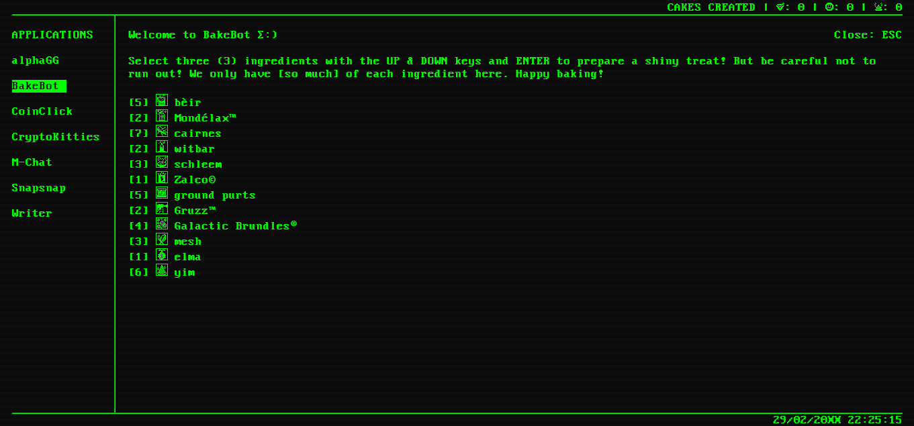

Welcome to the horrible combination of Zelda BotW's cooking mechanic and that game where you have to decide if things are soup or not, spiced with with probably too much retrofuturism and cyberpunk. Bon appétit! 😗👌

A cake-baking game about an asexual couple in the future. Made in a month half a month for the 2018 Ace Jam. Bake some questionable cakes and maybe learn a thing or two... Open source is on GitHub, for those interested in reading through some spaghetti Javascript.
END TRANSMISSION